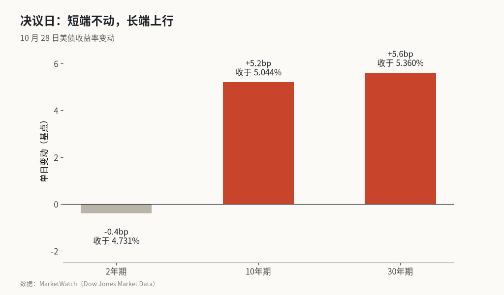
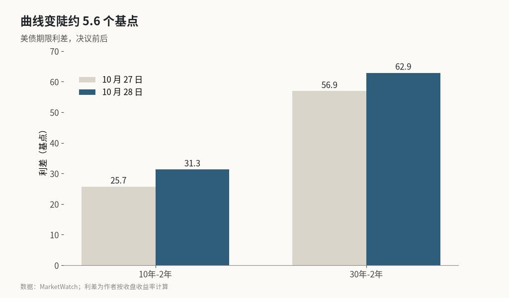

沃什按兵不动，10 年期美债替他加了 5 个基点
美联储以 10 比 2 维持 3.75%—4% 不变，2 年期收益率几乎没动，10 年期和 30 年期却各涨了 5 个多基点。沃什不预告 12 月，长端利率先替他收紧了一步。
美东时间 10 月 28 日，美联储宣布维持联邦基金利率目标区间 3.75%—4% 不变。投票结果是 10 比 2，理事 Lisa Cook 和克利夫兰联储主席 Beth Hammack 投了反对票，主张再加息 25 个基点。这是 Cook 自 2022 年以来第一次投反对票。
声明里有两处变化值得注意。对经济的描述从“稳健”（solid）上调为“强劲”（strong pace）；对通胀仍写“保持在高位”，并说“更多信息的积累”将帮助委员会决定合适的政策立场。也就是说，美联储既没有关上 12 月加息的门，也没有提前打开它。
股市当天的反应很平淡：道指涨 0.19%，标普 500 涨 0.28%，纳指涨 0.27%。变化主要发生在债券市场。
决议日收益率：2 年期微跌、长端上行，见图

当天收盘，2 年期美债收益率下跌 0.4 个基点，到 4.731%；10 年期上涨 5.2 个基点，到 5.044%，是 9 月 28 日以来最大的单日涨幅；30 年期上涨 5.6 个基点，到 5.360%。
2 年期主要反映对近期政策利率的预期。新闻发布会上，沃什不愿意对 12 月会议做任何预判，2 年期收益率在发布会期间回落。10 年期和 30 年期则走向相反方向：如果美联储在通胀 3.7% 的环境下选择等待，长期债券投资者就要求更多补偿。
曲线变陡约 5.6 个基点，图示

按收盘价计算，10 年期与 2 年期的利差从 25.7 个基点扩大到 31.3 个基点，30 年期与 2 年期的利差从 56.9 个基点扩大到 62.9 个基点，一天之内都走阔了 5.6—6 个基点。
这种“熊市变陡”说明，市场并不把这次按兵不动理解为宽松信号，而是理解为对通胀的容忍度变高。德意志银行在点评中提到，长期限美债的需求在收缩；下周财政部还要公布季度再融资安排，长端供给的压力并没有消失。
沃什把一部分紧缩交给了金融条件
发布会上，沃什的几句话解释了这次为什么不动。他说，除非有紧急情况，他不相信前瞻指引，也不想预判会议结果。他还说，自 9 月加息以来，金融和信用条件已经开始出现一些变化，“利率会渗进各种缝隙里”。
这些变化可以在价格上看到。9 月初以来，10 年期收益率上升了约 25 个基点，10 月 5 日一度收在 5.31%；30 年期在 10 月初一度触及 5.67%，10 年期和 30 年期都创下 24 年来的新高。同期，CoreWeave 股价从 9 月初跌了约 30%，其债券收益率接近 15%；高收益债 ETF HYG 下跌约 2%。
沃什同时强调，金融条件虽然收紧了，但“并不显著”，美联储也没有所谓“软的通胀目标”。X 上有账号把这层逻辑总结得很直接：通胀仍然偏高，但美联储不愿立即加息，于是由长端利率和信用市场承担一部分紧缩；如果信用条件继续恶化，美联储进一步加息的概率反而会下降。Fundstrat 则认为，美联储正在从 9 月的“超鹰派”立场往回退。
两张反对票之后，12 月加息概率反而升到八成以上
两张反对票让这次会议看起来更鹰派。7 月投反对票的 Logan 和 Kashkari 这次都站到了多数一边，换成 Cook 和 Hammack 主张加息。沃什把委员会内部的分歧形容为一场“家庭争吵”。
利率期货的定价也往加息方向走。CME 数据显示，12 月 9 日会议加息的概率约为 83%，前一天是 78%；CNBC 引用的 FedWatch 数据为 85.7%。会前，市场对本次会议加息的定价不到 10%。美国银行预计，美联储会在今年 12 月和明年 3 月各加息一次。
支持加息的理由在数据里很清楚。9 月 CPI 同比 3.7%；美联储在会上估计 9 月 PCE 通胀为 3.6%、核心 PCE 为 3.1%，都比此前的预估更高。通胀已经连续五年多高于 2% 的目标。经济也没有降温：上半年 GDP 增速被上修到 2.4%，亚特兰大联储 GDPNow 对三季度的估计为 3.4%。
另一层背景是时间点。11 月 3 日就是中期选举，Peter Schiff 等人在 X 上质疑，美联储选择在选举前一周按兵不动，是受到了政治压力。⚠️ 这一说法只是市场评论人士的推测，目前没有公开证据支持。
会上还宣布了一个容易被忽略的变化：2027 年仍开 8 次会议，但其中一次只讨论政策框架、不对利率投票；2028 年会有两次这样的“非决策会议”。
长端利率替美联储多做了一部分工作
这次会议的核心不是“不加息”，而是美联储愿意让市场利率替它收紧。2 年期几乎不动，说明市场不认为沃什急着出手；10 年期和 30 年期上行、曲线变陡，说明债券投资者不放心通胀，要求更高的期限溢价。结果是，虽然政策利率没变，房贷、企业债和成长股面对的融资成本都在上升。
风险在于这条路径并不稳定。如果长端在财政部再融资前后继续上冲，10 年期重回 5.3% 上方，信用市场的压力会从 CoreWeave 这类高杠杆公司扩散开，美联储可能在通胀没有回落的情况下被迫考虑金融稳定。反过来，如果 9 月 PCE 和三季度 GDP 数据偏弱，12 月 83% 的加息定价有回落空间，长端也会随之松动。
接下来的关键信号有三个：周四公布的 9 月 PCE 和三季度 GDP；下周财政部的季度再融资规模和期限结构；12 月 9 日会议前，10 年期能否守在 5% 附近，以及 10 年期与 2 年期利差是否继续走阔。
X 上怎么看
结论 · 多空分歧：3 位看多，4 位看空，5 位中性/分歧。对“按兵不动”没有分歧，争论在于这是鹰派暂停还是向后退，以及长端利率还能涨多少。
▲ 看多3 位
▼ 看空4 位
● 分歧或中性5 位
观点为 X 用户当日公开帖子的中文摘要，忠于原文但有删减；标「未核实」的为预测、个人推测或单一来源说法。立场为人工判断。
数据来源
- 收益率与股指收盘数据采用 MarketWatch 口径；两条利差曲线的变化为作者按前一日与当日收盘价计算。
- 12 月加息概率：MarketWatch 引用 CME 数据为约 83%，CNBC 引用 FedWatch 为 85.7%，取值时点不同，正文两者并列。
- 10 年期 10 月 5 日 5.31% 的收盘高点、30 年期 5.67% 的盘中高点、CoreWeave 与 HYG 的跌幅，均来自 Benzinga 对发布会的整理。
- “美联储因中期选举承受政治压力”是 X 上评论人士的推测，不是美联储或沃什的表述。
- https://www.federalreserve.gov/newsevents/pressreleases/monetary20261028a.htm
- https://www.federalreserve.gov/mediacenter/files/FOMCpresconf20261028.pdf
- https://www.cnbc.com/2026/10/28/fed-interest-rate-decision-october-2026.html
- https://www.cnbc.com/2026/10/28/us-treasurys-bonds-yields-federal-reserve.html
- https://www.marketwatch.com/story/u-s-stocks-up-treasury-yields-mixed-after-fed-hold-dbd6e218
- https://www.marketwatch.com/story/fed-s-rate-hold-sends-bond-yields-in-different-directions-2nd-update-01b5de1c
- https://www.benzinga.com/markets/macro-economic-events/26/10/62672193/warsh-december-hike-bond-market-tightening-credit-spreads
- https://apnews.com/article/inflation-warsh-interest-rates-federal-reserve-c06793b0c50641444701d5d098ccc2c8
- https://www.housingwire.com/articles/fed-holds-benchmark-rate/
- https://x.com/amitisinvesting/status/2115504623100330416
- https://x.com/NickTimiraos/status/2115503892905730129
- https://x.com/StockMKTNewz/status/2115513921159549040
- https://x.com/fundstrat/status/2115509251237884007
- https://x.com/Franktradinglog/status/2115535183457989098
- https://x.com/PeterSchiff/status/2115521458508066851